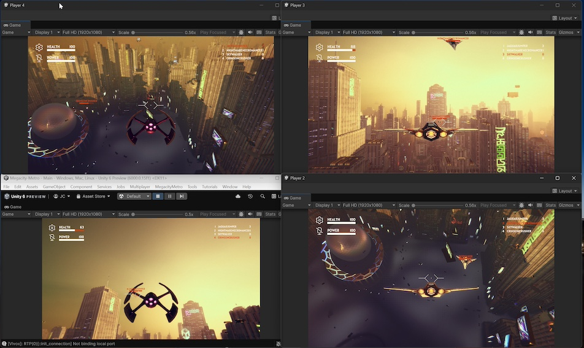
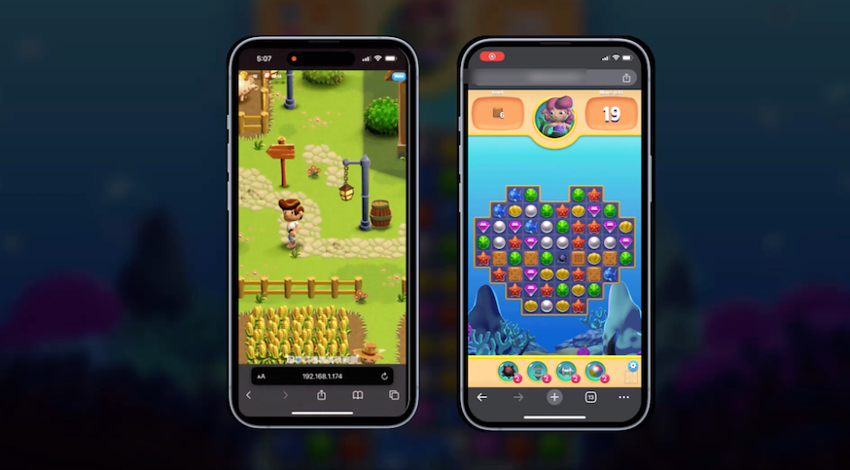
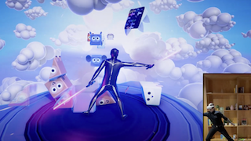
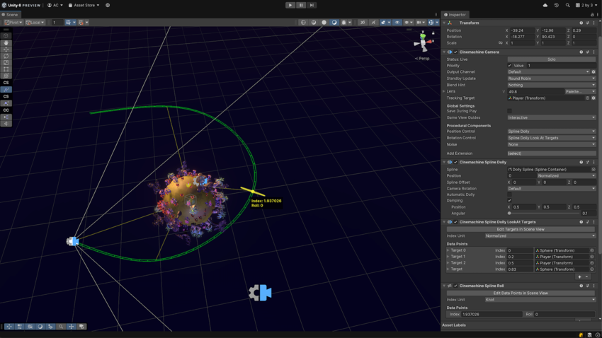
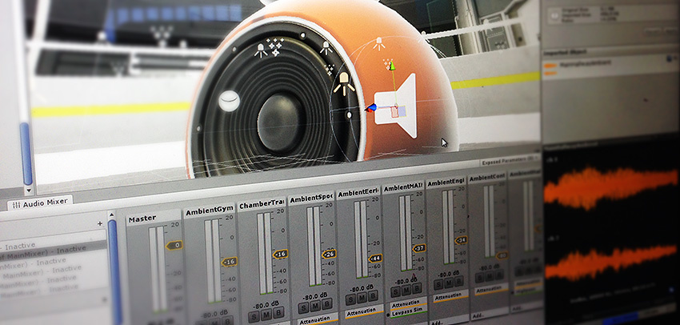
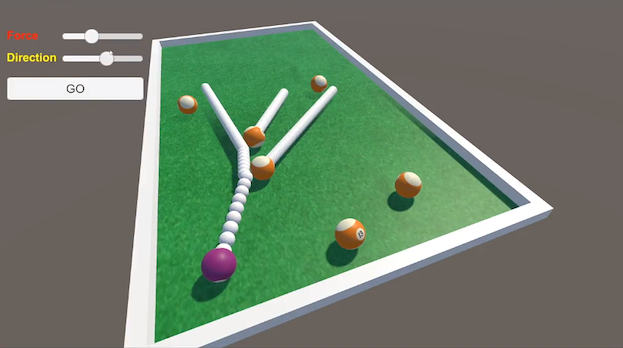
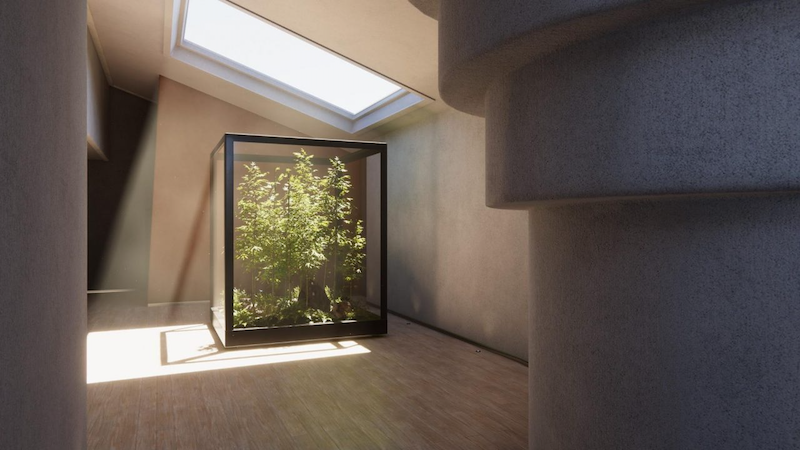
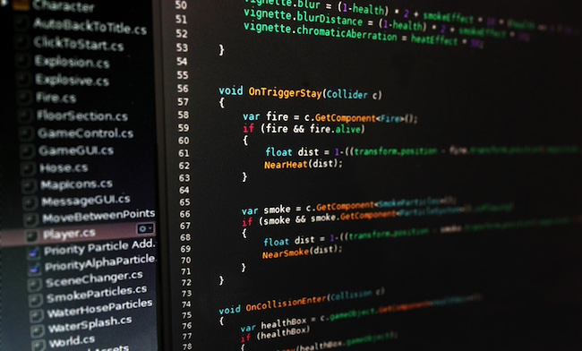
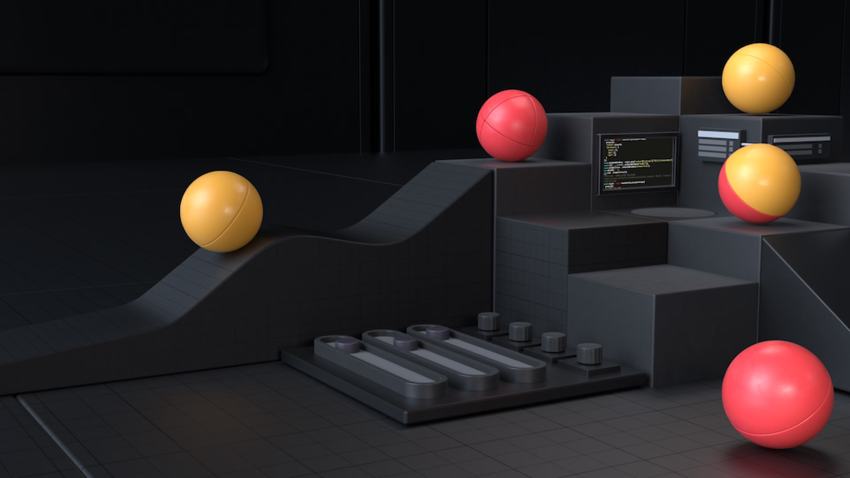

These are some main highlights of Unity 6.
Boost rendering performance
Elevate your scenesA Scene contains the environments and menus of your game. Think of each unique Scene file as a unique level. In each Scene, you place your environments, obstacles, and decorations, essentially designing and building your game in pieces. More info
See in Glossary with scalable, captivating visuals using the latest advances in rendering, lighting, and visual effects.

Multiplayer game creation
Simplify multiplayer game creation with Unity’s multiplayer packages and services

Expand multiplatform reach
Build better experiences for mobile platforms, including a newly optimized runtime for mobile browsers, and get the latest multiplatform advances for all supported platforms.

Unlock possibilities with Runtime AI
Unlock new possibilities with Runtime AI powered by Sentis, and create dynamic experiences across all Unity-supported platforms.

Achieve more engaging visuals
Create more engaging visuals with the latest updates to Lighting, Graphics performance and profiling, Shader Graph, and Visual Effect Graph.

Enhance productivity and functionality
Improve productivity and functionality across your entire Unity development environment with better profiling options, ProBuilder, Cinemachine, and UI Toolkit.
Featured content of the Unity User Manual.

Unity’s Animation system for creating complex character animation with animation curvesAllows you to add data to an imported clip so you can animate the timings of other items based on the state of an animator. For example, for a game set in icy conditions, you could use an extra animation curve to control the emission rate of a particle system to show the player’s condensing breath in the cold air. More info
See in Glossary and blending.

Audio in the Unity Editor, including clips, sources, listeners, importing and sound settings.

Unity Editor’s 2D-specific features including gameplay, spritesA 2D graphic objects. If you are used to working in 3D, Sprites are essentially just standard textures but there are special techniques for combining and managing sprite textures for efficiency and convenience during development. More info
See in Glossary, and physics.

Set up realistic or stylized lighting to apply for a range of art styles.

Multiplayer game development with Unity’s multiplayer packages and services.

Simulation of 3D motion, mass, gravity and collisionsA collision occurs when the physics engine detects that the colliders of two GameObjects make contact or overlap, when at least one has a Rigidbody component and is in motion. More info
See in Glossary.
Information about the platforms that you can build your application for.

Choose a render pipelineA series of operations that take the contents of a Scene, and displays them on a screen. Unity lets you choose from pre-built render pipelines, or write your own. More info
See in Glossary and add your own rendering and post-processingA process that improves product visuals by applying filters and effects before the image appears on screen. You can use post-processing effects to simulate physical camera and film properties, for example Bloom and Depth of Field. More info post processing, postprocessing, postprocess
See in Glossary.

Program your games by using scripting in the Unity Editor.

User interface toolkits available in the Unity Editor.

Unity services such as Monetization and Cloud Services, Ads, Cloud Build, and Multiplayer.
Add and customize particle, lens flareA component that simulates the effect of lights refracting inside a camera lens. Use a Lens Flare to represent very bright lights or add atmosphere to your scene. More info
See in Glossary, and full-screen effects.

Develop augmented, mixed, and virtual realityVirtual Reality (VR) immerses users in an artificial 3D world of realistic images and sounds, using a headset and motion tracking. More info
See in Glossary experiences with the Unity Editor.